A video walkthrough for this guide is available at https://youtu.be/xEO4SOjmUOw. The guide has been reorganized a bit since I made this video (bleh), but all the steps are the same.
A. Install Java
- The first thing to do is install the Java 9 SDK. Head over to the Oracle website, and click the “Download” button for the JDK, annotated with purple arrows in the image below: 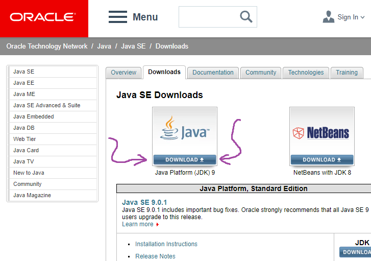
- On the following page, find the download section entitled “Java SE Development Kit 9.0.1” (or a higher version number, if this is out of date) and agree to the license. Then proceed to download the binary file for your operating system. 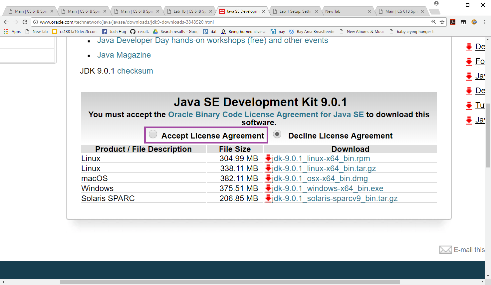
- Run the install file and follow the prompts to install Java onto your computer. It’s OK to select all of the default options. This may take several minutes, and it may seem to pause for a long time before completing. For me (Josh), it got stuck at the last 5% for at least three minutes before finally completing.
B. Everything Else
-
Before you start, you should have installed Java as described in lab 1 setup.
-
Install Python 3. We might not end up using Python in this course, but it’s handy to have just in case. The Python installer will ask if you want to add Python to your system’s path. You should say yes. 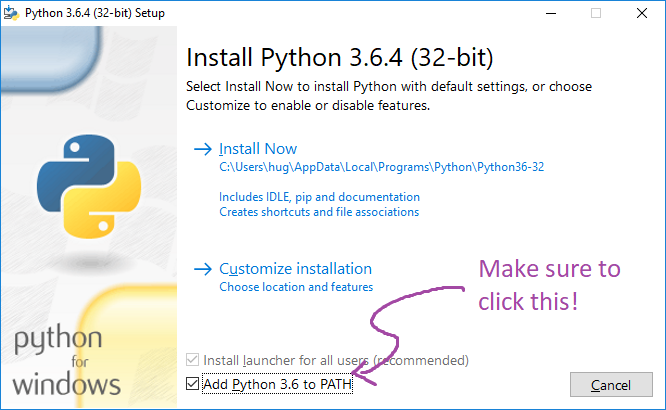
- Install git. Head to
http://git-scm.com/download/ and download the Git for Windows
installer. When you run the installer, you’ll be faced with many options. Unlike everything else,
we do not recommend the default options. Instead, you should choose the options listed below.
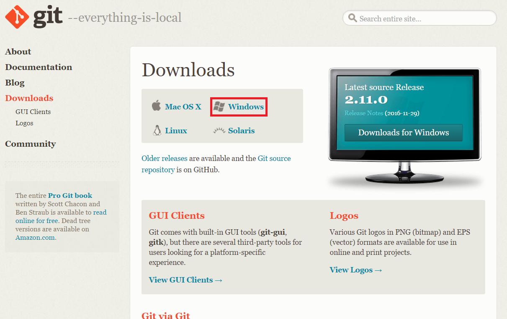
-
Checking
Windows Explorer integrationwill let you do git things upon right-clicking a file or folder, more specifically, run Git Bash and the Git GUI respectively. This is not required, but might be handy. 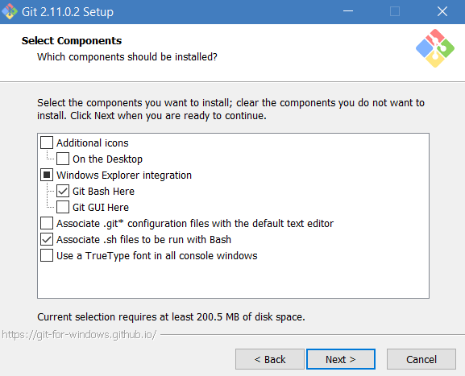 -
Next we’ll select a default Git Bash. Unless you’ve used vim before, we strongly recommend using nano instead. 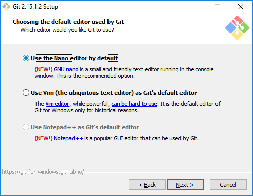
-
Git Bash is a bash shell with built-in git support and lets you use some MinGW/Linux tools. If you already know what bash is and have a preferred terminal, you’re welcome to use that instead. Using Git from Git Bash is the recommended option. 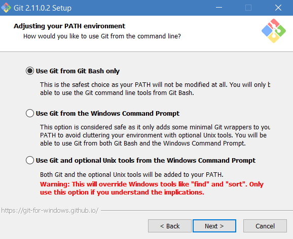
-
Windows and Unix based systems use different things to denote line endings in files. Use the recommended option (the first one) to avoid seemingly mysterious bugs down the road. 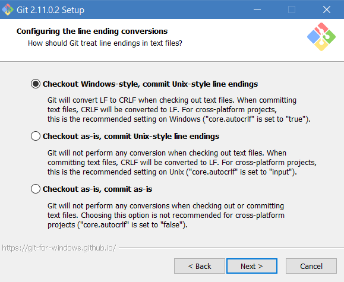
-
This option lets you pick between two different “terminal emulators.” This will deeply affect the aesthetics of your working environment, and IMO MinTTY is much better. Our official directions assume you choose MinTTY, so if you pick the other option, you’re on your own. One word of warning: if you want to run python in interactive mode using git bash, you need to either run it as
winpty pythonorpython -iinstead of just typingpython. 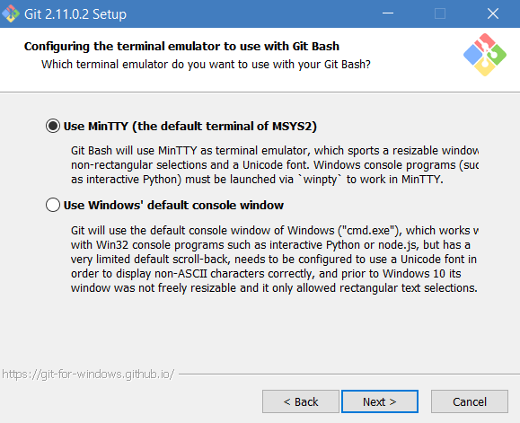
-
-
Lastly, we’ll set up some environment variables. Environment variables are variables available to the operating system. For example, whenever you try to run a program from the terminal, Windows will check the environment variable named
PATH, then will look at all folders listed in that variable for the program name, and if it finds that program in any of those places, it’ll run the program. The two environment variables we’ll set arePATHandJAVA_HOME. 1. Let’s start by seeing why we need to do this. Open up a git bash terminal (using the start menu) and you should see something like this pop up: 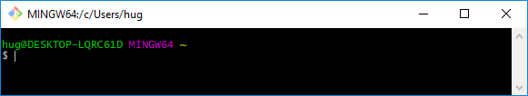 This prompt is awaiting our command. If we enter the commandjavac, we should get “command not found”, as shown below: 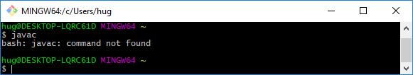 If javac actually works, then somehow javac is already in your path and you’re done with Windows setup, so you can close this page.2. Let’s view the current value of our
PATHcommand line variable. To do this, enter the commandecho $PATH. You should see something like the picture below. This is a colon separated list of everywhere Windows looks for programs when we try to run them. For example, when we typedjavac, it first looked in/c/Users/hug/bin, then it looked in/mingw64/bin, then/usr/local/bin, all the way until it got to/usr/bin/core_perl. Since it was unable to find Java in any of these locations, it tells us it was unable to find javac.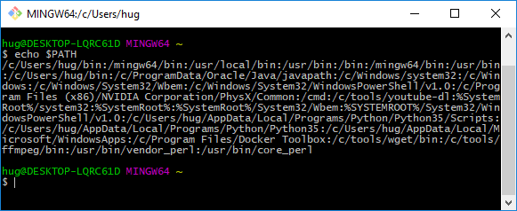 3. To fix this, we need to add the location of javac to our path. We’ll do this by first defining a variable called
JAVA_HOME, then including a reference toJAVA_HOMEin ourPATH. We’ll see what we mean by this in the following steps.4. Use Cortana (a.k.a. Windows search) in the bottom left corner of your desktop to search for “environment”. An option should pop up as shown below called “Edit the system environment variables”. If you’re using an older version of Windows this will look slightly different: [Windows 7 picture] [Windows 8 picture]
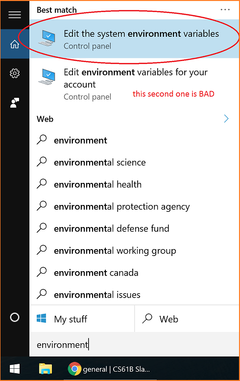 5. This should bring up something that looks like the picture below, with an “Environment Variables” button you should press.
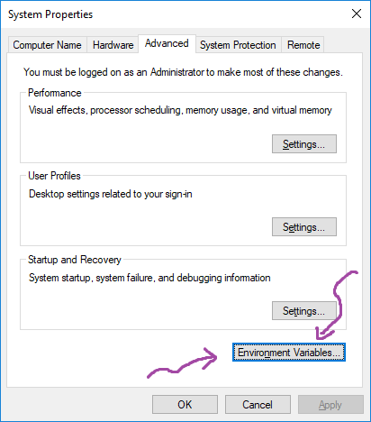 6. After pressing “Environment Variables”, you should be given a list of environment variables. The picture below is for Windows 10, but Windows 7 and 8 should look similar. Click the “New” button:
 7. Under “Variable name”, enter “JAVA_HOME” with an underscore. Under “Variable value”, enter the path where
you installed the java JDK. On my computer, this is: “C:\Program Files\Java\jdk-9.0.1”. It is important that the directory
name contains jdk and not jre (jre does not include javac!). You should end up with something like:
7. Under “Variable name”, enter “JAVA_HOME” with an underscore. Under “Variable value”, enter the path where
you installed the java JDK. On my computer, this is: “C:\Program Files\Java\jdk-9.0.1”. It is important that the directory
name contains jdk and not jre (jre does not include javac!). You should end up with something like: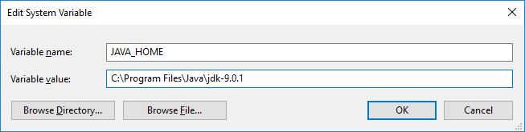 8. Now scroll down to the existing Path variable in the list. Click on it, then click edit.
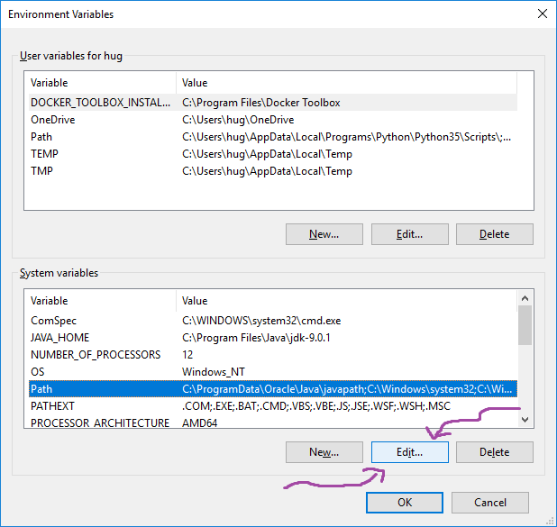 9. You’ll see all the directories in the path listed. If you’re on an older version of Windows, it’ll be on one big ugly line. In Windows 10, however, it’ll look nice, as shown below. On Windows 10, click “New”, and enter exactly
%JAVA_HOME%\binin the new box. On older versions, add%JAVA_HOME%\bin;with a semicolon to the beginning of the line. This tells Windows to look in the subfolder ofbinunderJAVA_HOMEany time you try to run any programs. Click OK.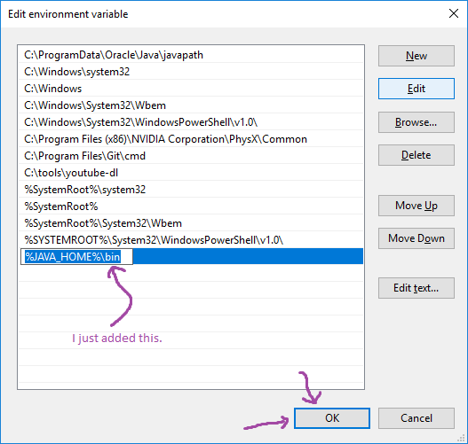 10. Close all terminal windows. Open a new Git Bash terminal window, and try
javacagain. This time it should work. If it does not, try printing out your path (using what we did in step 2) above, and confirming that your environment variable was properly set. If you’re still having trouble, post to Piazza.
{kind=link}
{kind=link}